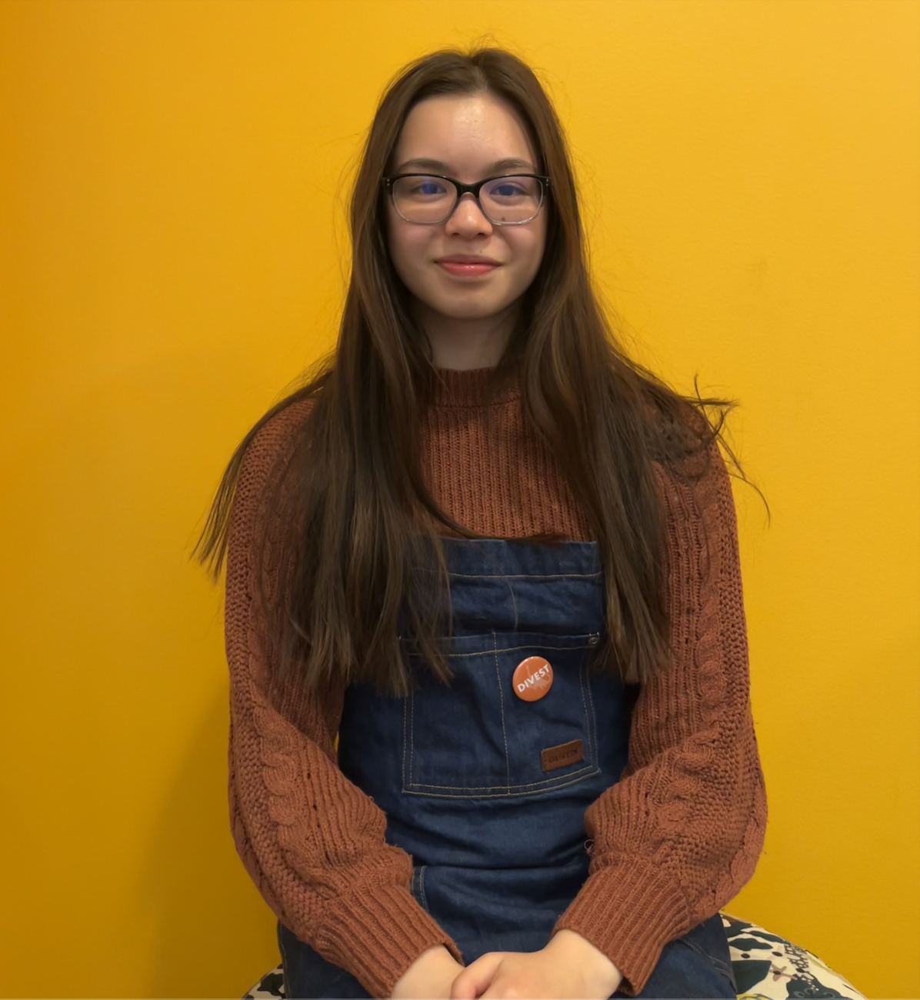
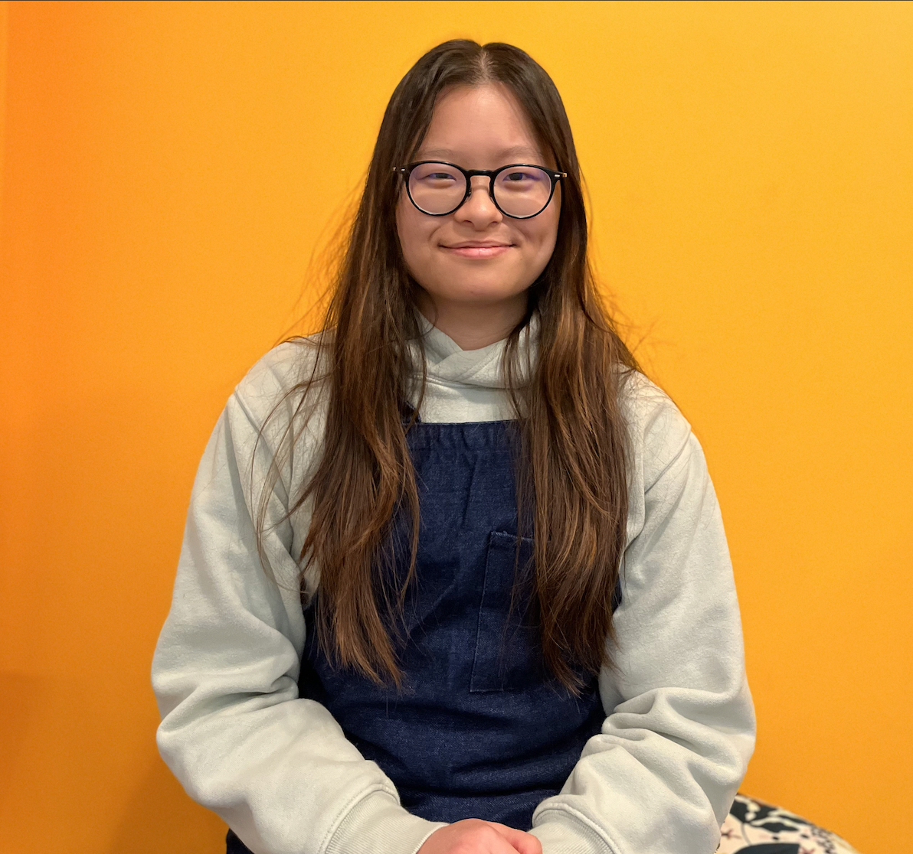
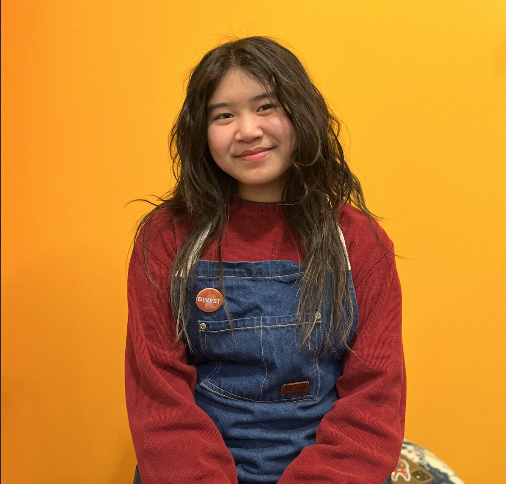
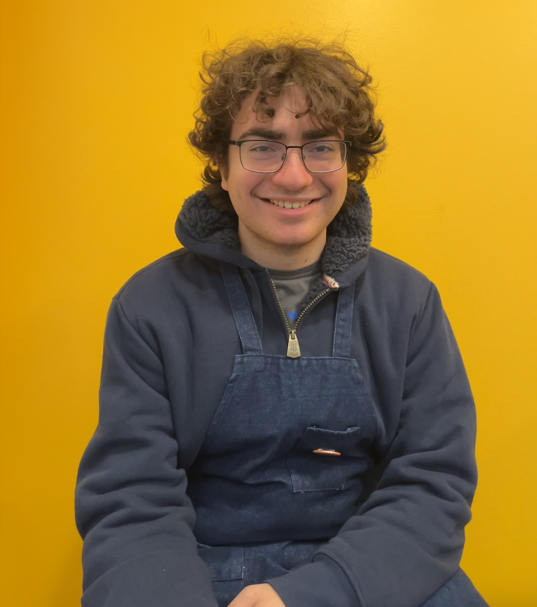

Meet the Team

An Grocki
I worked on the software and firmware by creating the GCode library to control the stepper motors. I also built this website to showcase our final product. I prefer tea, but I tested BaritaBot with hot chocolate.
Allyson Hur
I worked primarily on the electrical and firmware aspects of the latte art machine, but I also contributed to some of the path planning and the UI. My favorite coffee drink is a mocha, though I’m more of a tea drinker (especially chai or bubble tea!).
Madie Tong
I worked on the electrical and firmware parts of the project and also help with the assembly of the gantry. I also helped create commands for the GCode library and tested the latte art designs.
Jacob Prisament
I worked on designing and assembling the 3D gantry. I also helped electrically connect the solenoid valve, and contributed to the finetuning of the latte designs.
Lauren Nalajala
I worked on the mechanical aspect by designing and 3D-printing certain parts for the 3D gantry. I also created the outer shell for the 3D gantry to make it look professional.
- © Untitled
- Design: HTML5 UP